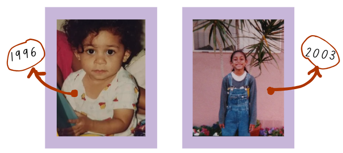

Hi! I'm Sharon McDermott
I’m a data-driven problem-solver who loves turning messy numbers and half-formed hunches into actionable insights. With 4+ years blending mixed-methods research, data analytics, and customer experience insights, I uncover patterns in markets and human behavior to guide business decisions, optimize marketing performance, and reveal opportunities that might otherwise be missed.
Portfolio
Selected projects. Click a tile to see a quick overview with methods and outcomes.


About Me

Hello! I'm Sharon McDermott, born and raised in Los Angeles—specifically, the intersection of Sepulveda and Venice, where the world began and ended outside a pink apartment building and its stubborn patch of grass.
I'm the youngest in my family, a position that came with a particular image: delicate, breakable, and needing protection. I didn't love that narrative, so I rewrote it. Tae Kwon Do became my plot twist—a way to show the world (and myself) that I could hold my own. Somewhere between sparring practice and broken boards, I discovered I liked surprising people—especially when that person was me.
Los Angeles raised me on art, cinema, and history. It's why I draw, can't resist a museum, and gravitate to films where nothing explodes, but everything matters. At ten, my world stretched 285 miles east to Las Vegas. The desert had fewer art-house theaters, but it was decorated in many personalities. I became an observer, a listener, a collector of stories that weren't mine but felt like they could be.
Psychology and philosophy slipped into my life like they'd always belonged there. Eventually, I pursued a B.S. in Psychology at UNLV, then became a research coordinator and realized I loved turning curiosity into data and data into meaning. That curiosity pushed me to earn an M.S. in Data Science—I didn't just want to ask questions; I wanted to find answers in the details.
Now, I'm drawn to a career where empathy meets inquiry—where storytelling meets structure.
Contact
Contact me if you want someone who can dive into the chaos of numbers and come back with a story that actually means something—that’s my sweet spot. I’ll bring the data, the curiosity, and the kind of clarity that makes the insight impossible to forget.